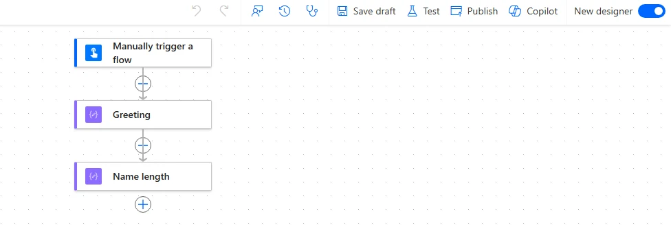
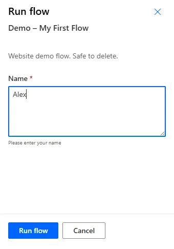
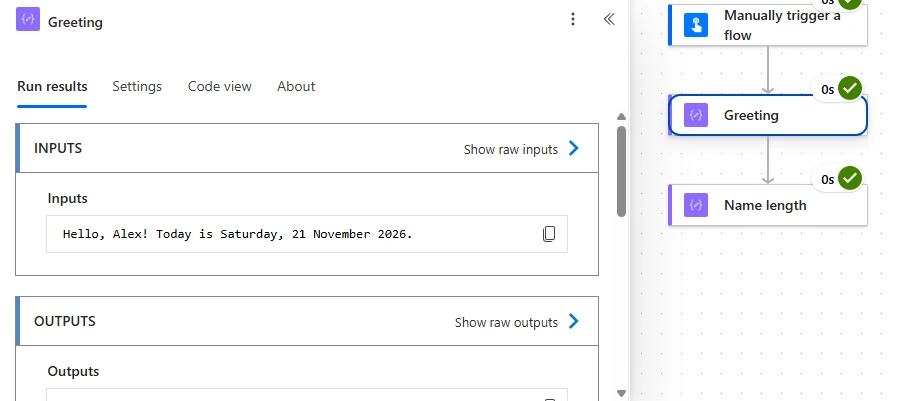

- Power Automate
- Level 1 · Foundations · 2 of 7
Your first flow: trigger, actions and a test run
The quickest way to understand flows is to build one. This flow asks for a name, builds a greeting with today's date, and counts the letters. It needs no connections, so you can build it in any environment.
The flow: one input, two results
WhatAn instant flow with one text input and two Compose actions.
WhyCompose shows the result of every formula in the run, so it's the best way to learn.
DemoType Alex, get a greeting and the name's length.
What happens when you run it
Trigger: Manually trigger a flow, input Name = "Alex"
Compose Greeting: build a sentence from the name and today's date
Compose Name length: count the characters
Run results: "Hello, Alex! Today is Saturday, 21 November 2026." and 4

The greeting formula
concat('Hello, ', triggerBody()?['text'], '! Today is ', formatDateTime(utcNow(), 'dddd, dd MMMM yyyy'), '.')| Piece | What it does |
|---|---|
concat(...) | Joins all the pieces into one text. |
'Hello, ' | Fixed text. Text in expressions goes in single quotes. |
triggerBody()?['text'] | The value typed into the trigger's first text input: Alex. |
utcNow() | The current date and time, in UTC. |
formatDateTime(..., 'dddd, dd MMMM yyyy') | Turns the date into Saturday, 21 November 2026. |
Each piece, with the demo's values
| Piece | Value at run time |
|---|---|
'Hello, ' | "Hello, " |
triggerBody()?['text'] | "Alex" |
'! Today is ' | "! Today is " |
formatDateTime(utcNow(), …) | "Saturday, 21 November 2026" |
concat(…) | "Hello, Alex! Today is Saturday, 21 November 2026." |
The second action is simpler: length(triggerBody()?['text']) counts the characters, giving 4.
Run it and read the result
Test loop
Save (or Publish)
Test → Manually → Test
Type Alex → Run flow → Done
Open the run and select each card


Watch out
- The trigger input is called
textinternally even though you labelled it Name; a second text input would betext_1. Pick inputs from the dynamic content list rather than typing these names. utcNow()is UTC, not your local time. UseconvertFromUtc()when the time of day matters.
New to this? Start from the basics optional
Instant flow: a flow you start yourself. It can ask for inputs (text, number, yes/no, file, date).
Compose: an action that holds one value, like a calculator display.
Expression: a formula such as concat() or length(). The next article covers them.
Build it step by step optional
- Create an Instant cloud flow named My First Flow with Manually trigger a flow.
- Select the trigger, Add an input → Text, label it Name.
- Add a Compose, rename it Greeting, click in Inputs, select fx, paste the formula and select Add.
- Add a second Compose Name length with
length(triggerBody()?['text']). - Save, then Test → Manually → Test, type Alex, Run flow, Done.
- Open the run and select each card to see its result.
Common mistakes
- Typing the formula straight into Inputs without the fx editor: it's saved as plain text and never calculated.
- Using double quotes in expressions. Only single quotes work:
'Hello'. - Expecting local time from
utcNow().